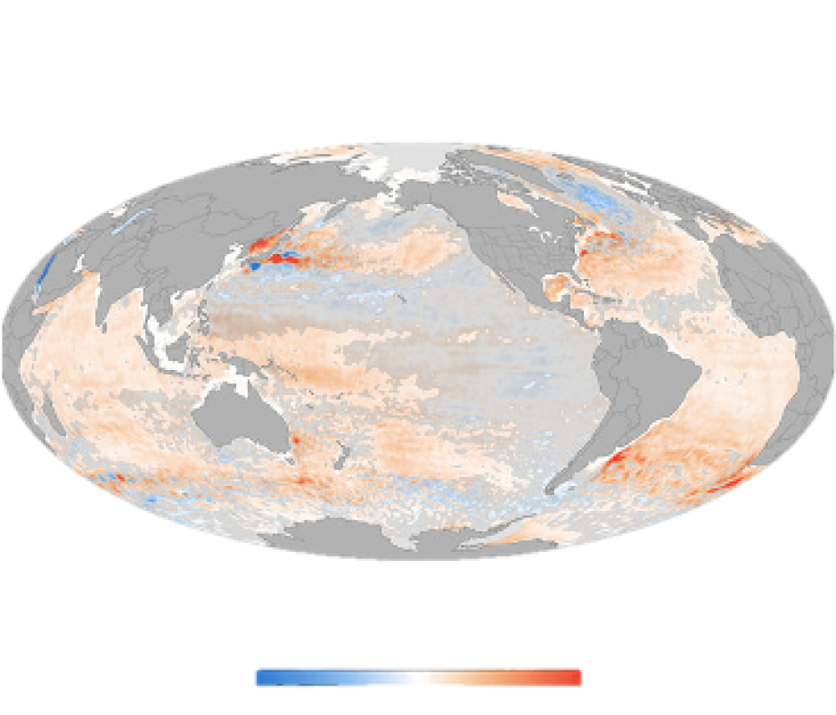
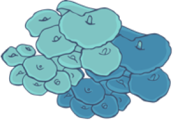

DECO3100 | Interactive Visualisation Project
MZHE6329
A Tale of Tragedy and Hope
From Vibrant Reefs to Bleached Wastelands:
The
Urgent Need to Act Now
(Scroll down with your mouse to begin)
floating in the crystal-clear waters of
the Great Barrier Reef,
surrounded by colourful fish
and vibrant coral
Unfortunately,
this experience may become a thing of the past if we
don't act now to address coral
bleaching.
Video shot and edit by Muriel Zheng in the Agincourt Ribbon Reefs on the Great Barrier Reef in December 2022
floating in the crystal-clear waters of
the Great Barrier Reef,
surrounded by colourful fish
and vibrant coral
...
(Hover over the text and icons with your mouse for bonus!)
Video Source by Pexels Magda Ehlers
Coral reefs are one of the most diverse ecosystems on Earth...
In
fact, they have the highest biodiversity among all ecosystems worldwide, providing habitat for
approximately 25%
of marine species. These vibrant ecosystems are found throughout tropical regions and sustain over
a billion
people through invaluable ecosystem services.
Corals are marine invertebrates that inhabit
shallow waters, primarily in tropical and subtropical regions. Their bodies are covered by a hard
exoskeleton, which can form coral reefs and is a crucial component of coral reef ecosystems.
below is an interactive world map which showing
the vibrant and diverse coral reef ecosystem
Endemic Reef-forming Coral Species In 2020
Source: IUCN Red List (2020)
Endemic species are plants and animals that exclusively inhabit a specific geographical area. These species are predominantly found in isolated environments, such as islands, where unique conditions and barriers to immigration exist. Over time, the prolonged geographic isolation fosters the evolution of distinct and exceptional species within these isolated regions.
EXPLORE MORE ABOUT CORAL SPECIES...
Coral reefs are not only beautiful and biodiverse,
BUT they
also provide food, livelihood, and protection for millions of people around the
world...
Corals engage in a symbiotic relationship with algae, where
corals provide a living space and
nutrients for the algae, while the algae provide energy and pigments for the corals.
Coral reef
ecosystems support a diverse array of marine life, serving as habitats and food sources for many
organisms.
They also play a crucial role in global carbon cycling and maintaining balance within
marine ecosystems.
...
HOWEVER,
Coral Bleaching
Occurs
when coral reefs turn white or lose their colour due to
environmental stress, and it's a growing
threat to marine ecosystems.
Just 1℃ higher for 4 weeks can cause bleaching
Change in Ocean Heat Content (W/m2)
SO, why does coral bleaching HAPPEN?
The global climate change. As temperatures rise and the ocean becomes more acidic, the environment in which the tiny algae inside the coral polyps live becomes more hostile, causing them to die or leave, leading to coral bleaching (Dahlman and Lindsey, 2020).
There are two main reasons:
Human activities that damage marine ecosystems. Overfishing, pollution, and urbanisation can all have a negative impact on coral reefs, exacerbating coral bleaching (Andrello et al., 2021).
Coral bleaching is increasing in frequency and intensity as a result of climate change and human activities. Coral reef bleaching events around the world have statistically increased significantly over the past few decades, and many reefs have lost their original colors...
Occurrence And Trend Of Global Coral Bleaching Events
Source: Hughes, T. P., et al. (2018). Spatial and temporal patterns of mass bleaching of corals in the Anthropocene. Science.
Let's take a closer look at the Great Barrier Reef (Australia), the world's largest coral reef system...
Occurrence and trend of coral bleaching events
in Australasia
Source: Hughes, T. P., et al. (2018). Spatial and temporal patterns of mass bleaching of corals in the Anthropocene. Science.
According to recent studies, the Great Barrier Reef has experienced
four major coral bleaching events in
the past 20 years, with the most severe occurring in 2016. Over 1000 km of the Great Barrier Reef has been
affected thus far. The reef has witnessed a 50% decline in its coral cover over the past three decades,
with the most significant declines observed in the last five years (Readfearn, 2020).
The repercussions of this event alone led to the loss of
over one-third of the coral
population, which had taken decades to grow, and it continues to face ongoing challenges in its recovery
process.
The comparison of average hard coral cover between the three most recent five-year periods indicates a significant (>89% probability) overall decrease in coral cover over the last 15 years. On average, there was a 25.3% reduction in coral cover on Australian reefs between the periods of 2015-19 and 2005-09, with nearly 70% of this decline occurring between 2005-09 and 2010-14.
The comparison of average algal cover during the last three five-year periods unequivocally indicates (with 100% probability) that there was a higher prevalence of algae on Australian reefs in 2015-19 compared to 2005-09.
For more detail on the Australia’s coral reefs and its subregions see the GCRMN global report Status of Coral Reefs of the World: 2020
The events were closely intertwined with global climate change, causing a devastating impact on the biodiversity of the reef.
Number Of Severe Coral Bleaching Events By Stage Of The Enso Cycle
Source: Hughes, T. P., et al. (2018). Spatial and temporal patterns of mass bleaching of corals in the Anthropocene. Science.
The El Niño–Southern Oscillation (ENSO) is a recurring phenomenon characterized by fluctuations in winds
and sea surface temperatures across the tropical eastern Pacific Ocean. It exerts a significant
influence on the climate of tropical and subtropical regions. The warm phase of this oceanic temperature
anomaly is known as El Niño, while the cool phase is referred to as La Niña.
The ENSO cycle is
primarily driven by changes in atmospheric pressure. El Niño is accompanied by high atmospheric pressure
over the tropical western Pacific, whereas La Niña is associated with low atmospheric pressure. These
phases typically persist for several months and tend to occur every few years. The intensity of each
cycle can vary.
Corals require specific temperatures and climate conditions to
thrive and reproduce. Unfortunately,
global warming is disrupting their delicate ecological balance by increasing sea temperatures. The ongoing
El Niño event, along with local wind and cloud cover patterns, has further intensified the impact of
climate change, resulting in extremely high sea surface temperatures in the Great Barrier Reef (GBR)
region (Australia. Department Of Climate Change, 2009).
Over the past three decades, water
temperatures in Australia's Great Barrier Reef region have risen by an average of 0.9 degrees Celsius.
This significant increase has led to more frequent occurrences of coral bleaching events.
The diagram is licensed under the Creative Commons Attribution 4.0 International Licence
Creatures depend on it for food and shelter are also affected.
Coral bleaching events can have a ripple effect on the entire ecosystem
Video Source by Pexels Alex Mesel
According to a report by the World Wildlife Fund, coral reefs contribute to the global economy by providing livelihoods for millions of people, particularly in the fishing and tourism industries. Consequently, the well-being of millions of individuals relying on fishing and tourism in these areas can be affected (Cesar, L Burke and L Pet-Soede, 2003).
Coral Reef’s Contribution To The Global Economy
In Australia, coral reefs provide benefits to 2 million people, with
approximately 1 million individuals
likely being highly reliant on reefs for their food or livelihood.
(Estimated using WorldPop and World Vector Shoreline data. Individuals
residing within 30 km of reefs and
10 km of the coast were considered "highly dependent," while those within 100 km of reefs were
considered to "benefit." (Vizzuality, n.d.))
Local Threats
Local activities and pollution pose a threat to 15% of reefs in
Australia. Marine sources of pollution
have been rated as the most pervasive threat, while pollution and sediment from land, as well as
overfishing, also pose threats to certain reefs (Burke et al., 2011).
The health of coral reefs is threatened from many nearby human
activities. This dataset describes,
individually and in aggregate, the threat posed by the following nearby activities: coastal development,
marine-based pollution, watershed-based pollution, and overfishing and other destructive fishing
practices. This dataset expresses these threats via an index of low, medium, or high threat severity at a
1 km resolution (the integrated threat index also includes a "very high" category).
The
dataset was created at the World Resources Institute (WRI) as part of the Reefs at Risk Revisited study
and represents threats for the year 2011. The coral reef location dataset used was based on 500 meter
resolution gridded data reflecting shallow, tropical coral reefs of the world. Organizations contributing
to the data and development of the map include the Institute for Marine Remote Sensing at the University
of South Florida (IMaRS USF), Institut de Recherche pour le Développement (IRD), United Nations
Environment World Conservation Monitoring Centre (UNEP-WCMC), WorldFish Center, and WRI (Burke et al.,
2011).
Taking Actions for Coral Bleaching:
How YOU Can Make
a Difference
We must take action to reduce carbon emissions, which
contribute to global warming, and protect coral
reefs. By raising awareness of this issue, taking proactive measures, and collaborating to preserve the
beauty and diversity of our marine ecosystems...
SHRINK YOUR CARBON FOOTPRINT TO REDUCE GREENHOUSE GASES
Minimise energy consumption by turning off unnecessary appliances and lights. Opt for energy-efficient
appliances when making purchases.
Reduce your reliance on driving by choosing to walk, bike, use
public transportation, or carpool.
Promote renewable energy by supporting the purchase of green
electricity or considering the installation of solar systems.
Embrace digital alternatives to
printing whenever possible, prfioritize downloading over physical copies, and practice water
conservation.
...
DO YOUR PART TO HELP IMPROVE OVERALL CORAL REEF CONDITION
Reduce plastic use and Marine pollution:
Choose sustainable shopping bags and containers and avoid
single-use plastics.
Volunteer for
beach an waterway clean ups to help remove plastic waste and other pollutants.
Avoid releasing
hazardous substances into the drainage system and ensure proper disposal and recycling of
waste.
Support sustainable tourism and
environmental practices:
Choose responsible tour
operators and pay attention to their environmental practices and community
support programs.
Observe local marine protection regulations and show respect for the local
culture and environment. Learn about good reef etiquette and practice it when in the
water.
Promote education and
awareness:
Share information about coral
bleaching and Marine conservation.
Participate in and support
local environmental protection organizations, initiatives and projects.
...